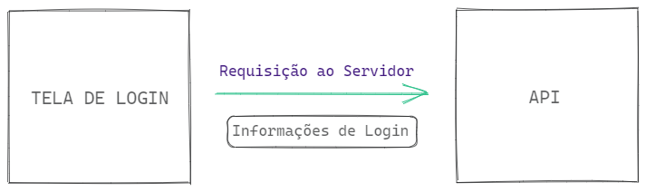
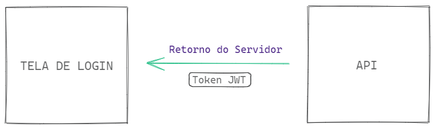
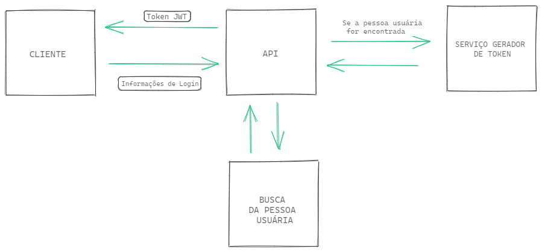

7.5 - Autenticação
Autenticar é um verbo comum no universo do desenvolvimento de software e possui um propósito bem definido. Refletindo sobre o significado da palavra, autenticação é a validação de que algo é autêntico, ou seja, a confirmação da veracidade de determinado requisito.
No mundo do desenvolvimento de sistemas, o conceito é o mesmo. A autenticação garante que, por exemplo, uma pessoa usuária de um software demonstre sua identidade, confirmando que pode acessar determinados recursos ou informações.
Esse processo está diretamente ligado à segurança da informação, já que um dos objetivos é reduzir os riscos de acesso indevido ou vazamento de dados de uma aplicação. Um exemplo prático é o processo de login, em que a pessoa usuária é identificada antes de acessar o sistema.
Um dos métodos mais utilizados para autenticação é o JSON Web Token (JWT), que funciona como um token de comunicação entre duas partes de um sistema. Ele permite que as informações de autenticação sejam transmitidas com segurança em formato JSON.
Passo a passo do funcionamento da autenticação com o JWT
Vamos entender o processo de autenticação utilizando o JWT através de um exemplo simples: um sistema de streaming em que o login é necessário para acessar conteúdos exclusivos.
1. O envio de credenciais
Quando a pessoa usuária preenche o formulário de login com seu e-mail e senha e clica no botão para acessar o sistema, uma requisição HTTP é enviada para o servidor. Essa requisição ativa um endpoint da API responsável por autenticar o usuário.

2. A geração do token JWT
No servidor, a API verifica as credenciais da pessoa usuária. Se estiverem corretas, a autenticação é realizada com sucesso e um token JWT é gerado. Esse token será devolvido para o cliente, permitindo que ações futuras sejam realizadas com base nessa autenticação.

3. Uso do token nas requisições subsequentes
Com o token JWT em mãos, o cliente pode enviá-lo no header de novas requisições HTTP para acessar funcionalidades restritas da aplicação, como comentar em vídeos ou salvar favoritos. O servidor valida o token recebido antes de executar as operações solicitadas.
Instalação do JWT no Node.js
Para trabalhar com JWT em aplicações Node.js, é necessário instalar a biblioteca jsonwebtoken. Para isso, execute o seguinte comando no terminal:
npm install -E jsonwebtoken@9.0.2
Com isso, você estará pronto para implementar autenticação com JWT em seu projeto.
OBS da IA
Alternativa mais moderna
jsonwebtokenainda é muito usado; a alternativa moderna éjose(sem dependências, ESM, Web Crypto, funciona em Node/Deno/edge).- Ao verificar, fixe o algoritmo:
jwt.verify(token, secret, { algorithms: ['HS256'] }).
Atenção
process.env.JWT_SECRET || 'secret': se a variável faltar, a API assina tokens com um segredo público. Em produção, aborte a inicialização quando o segredo não estiver definido.
Geração de Token
Voltando à nossa API Cookmaster, vamos implementar a geração de token JWT. Assumindo que a API já possui a funcionalidade de login implementada, ajustaremos o código para que ele retorne um token JWT sempre que o login for bem-sucedido.

1. Criando a função de geração de tokens
Criaremos um arquivo chamado src/utils/manager.JWT.js para centralizar a lógica de geração de tokens:
// src/utils/manager.JWT.js
const jwt = require('jsonwebtoken');
const JWT_SECRET = process.env.JWT_SECRET || 'secret';
const jwtConfig = {
expiresIn: '1d', // O token expira em 1 dia
algorithm: 'HS256', // Algoritmo de assinatura
};
const createToken = (payload) => {
const token = jwt.sign(payload, JWT_SECRET, jwtConfig);
return token;
};
module.exports = {
createToken,
};
Explicação do código
JWT_SECRET: Define uma chave secreta para assinar o token. Essa chave é fundamental para garantir que o token seja validado corretamente.jwtConfig: Configurações do token, como o tempo de expiração (expiresIn) e o algoritmo de assinatura (HS256).createToken: Recebe os dados da pessoa usuária (como id e e-mail) e gera um token JWT assinado.
2. Modificando o Service
No arquivo src/service/user.service.js, faremos alterações para que o serviço de login e cadastro retorne o token JWT:
// src/service/user.service.js
// const bcrypt = require('bcryptjs');
// const userModel = require('../model/user.model');
const { createToken } = require('../utils/manager.JWT');
// Outras Implementações
// const createUser = async (user) => {
// const salt = bcrypt.genSaltSync(10);
// const hashedPassword = bcrypt.hashSync(user.password, salt);
// const newUserWithBcrypt = { ...user, password: hashedPassword };
// const newUser = await userModel.create(newUserWithBcrypt);
const { password: _, ...userWithoutPassword } = newUser;
const token = createToken(userWithoutPassword);
return token;
// };
// Outras Implementações
// const findUserByEmail = async ({ email, password }) => {
// const user = await userModel.findByEmail(email);
// if (!user) return { error: 'Invalid fields' };
// const isPasswordValid = bcrypt.compareSync(password, user.password);
// if (!isPasswordValid) return { error: 'Invalid fields' };
const { id, name, role } = user;
const token = createToken({ id, name, email, role });
return token;
// };
// Outras Implementações
Em ambas as funções, createUser e findUserByEmail, o token é gerado a partir dos dados da pessoa usuária (exceto a senha) e retornado como resposta da função.
3. Modificando o Controller
No arquivo src/controller/user.controller.js, ajustamos o método de cadastro para retornar o token:
// src/controller/user.controller.js
// Outras Implementações
// const createUser = async (req, res) => {
const user = req.body;
const token = await userService.createUser(user);
return res.status(201).json({ token });
// };
// Outras Implementações
e também o arquivo de src/controller/auth.controller.js para que ele consiga retornar o token
// src/controller/auth.controller.js
// const login = async (req, res) => {
// const { email, password } = req.body;
const token = await userService.findUserByEmail({ email, password });
if (token.error) {
return res.status(400).json({ error: token.error });
}
return res.status(201).json({ token });
// };
Com essas alterações, ao realizar o login ou o cadastro, um token JWT será gerado e retornado para o cliente, permitindo acesso a recursos restritos.
Autenticação com JWT
Além de gerar tokens JWT para autenticar usuários, precisamos garantir que o sistema valide esses tokens em cada requisição protegida. Essa validação assegura que apenas usuários autenticados possam acessar determinadas rotas ou recursos.
A melhor forma de implementar essa validação é utilizando um middleware, que intercepta as requisições protegidas e verifica se o token fornecido é válido. Se for, a requisição continua; caso contrário, ela é bloqueada.
1. Criando a função de verificação de token
Vamos adicionar a lógica de validação de tokens no arquivo src/utils/manager.JWT.js, centralizando todas as operações relacionadas ao JWT:
// src/utils/manager.JWT.js
// const jwt = require('jsonwebtoken');
// const JWT_SECRET = process.env.JWT_SECRET || 'secret';
// const jwtConfig = {
// expiresIn: '1d',
// algorithm: 'HS256',
// };
// const createToken = (payload) => {
// const token = jwt.sign(payload, JWT_SECRET, jwtConfig);
// return token;
// };
const verifyToken = (token) => {
try {
const decoded = jwt.verify(token, JWT_SECRET);
return decoded;
} catch (error) {
return null; // Retorna null caso o token seja inválido ou expirado
}
};
// module.exports = {
// createToken,
verifyToken,
// };
Explicação do código
verifyToken: Recebe um token JWT e verifica sua validade.
- Utiliza a função jwt.verify para verificar a validade do token.
- Retorna os dados decodificados caso o token seja válido.
- Caso o token seja inválido, será gerado um erro e a função retornará null.
2. Criando o middleware de autenticação
Agora, criaremos um middleware que utiliza a função verifyToken para autenticar as requisições protegidas. Vamos adicioná-lo em um arquivo chamado src/middleware/auth.middleware.js:
// src/middleware/auth.middleware.js
const { verifyToken } = require('../utils/manager.JWT');
const authenticateToken = (req, res, next) => {
const bearerToken = req.headers.authorization; // Token deve ser enviado no cabeçalho da requisição no formato bearer
if (!token) return res.status(401).json({ error: 'Token Not Found!' });
const token = bearerToken.split(' ')[1];
if (!token) return res.status(401).json({ error: 'Token Not Found!' });
const decoded = verifyToken(token);
if (!decoded) {
return res.status(401).json({ error: 'Invalid or expired token' });
}
req.user = decoded; // Adiciona os dados do usuário decodificados no objeto req
return next();
};
module.exports = authenticateToken;
Explicação do código
- O middleware busca o token no cabeçalho
Authorization. - Caso o token não seja encontrado, retorna uma resposta
401 - Unauthorized. - Se o token for inválido ou expirado, retorna uma resposta com mensagem de erro.
- Caso seja válido, adiciona os dados do usuário no objeto
reqe permite que a requisição continue.
OBS da IA
Atenção
- No middleware mostrado, a linha
if (!token)aparece antes deconst token = ...— isso geraReferenceError. A primeira verificação deveria serif (!bearerToken).
Para o SAP CAP
- No CAP não há middleware de JWT manual. Declare no CDS:
@requires: 'authenticated-user'no serviço/entidade. Em desenvolvimento usecds.requires.auth.kind: 'mocked'(usuários de teste nopackage.json); em produçãoxsuaaouias. O usuário logado fica emreq.user(req.user.id,req.user.is('admin')).
3. Protegendo rotas com o middleware
Para usar o middleware, basta aplicá-lo nas rotas que exigem autenticação. Vamos proteger uma rota de exemplo no arquivo src/routes/recipes.routes.js:
// src/routes/recipes.routes.js
// const express = require('express');
// const recipeController = require('../controller/recipe.controller');
// const validateRecipe = require('../middlewares/validate.recipe');
const authenticateToken = require('../middlewares/auth.middleware');
// const router = express.Router();
// router.get('/', recipeController.findAllRecipes);
// router.get('/:id', recipeController.findRecipeById);
router.post('/',
authenticateToken,
validateRecipe.validateCreateRecipe,
recipeController.createRecipe);
router.put('/:id',
authenticateToken,
validateRecipe.validateUpdateRecipe,
recipeController.updateRecipe);
router.delete('/:id', authenticateToken, recipeController.deleteRecipe);
// module.exports = router;
Explicação das alterações:
- As rotas que utilizam os métodos POST, PUT e DELETE exigem autenticação e utilizam o middleware authenticateToken para validar o token antes de acessar o controlador.
- Já as rotas
GETpermanecem públicas, não exigindo autenticação.
Com essas modificações, a API agora está equipada para autenticar usuários com JWT, proteger rotas de recipes e validar tokens. Esse fluxo completo garante segurança e praticidade para as requisições autenticadas!
Agora, vamos fixar os conceitos aprendidos com o vídeo a seguir:
Minhas anotações
Atalhos: ← → navegar · Ctrl K ou / buscar